三角形是由同一平面内不在同一直线上的三条线段“首尾”顺次连接所组成的封闭图形，符号为△ 。三角形是几何图案的基本图形。
三角形的面积是三条线段所围成的封闭图形的大小，三角形的周长是三条线段的长度和。三角形的面积计算公式是：底×高÷2，三角形的任意一条边都可作为底，高必须是对应底边上的高，直角三角形的两条直角边互为底和高。
三角形的面积是等底等高平行四边形面积的一半。若面积相等，底相等，三角形的高是平行四边形高的2倍；若面积与高相等，平行四边形的底是三角形底的一半。
例1 推导三角形面积计算的公式常用方法有哪些？请用图表示出来。
推导三角形的面积计算公式我们要用到转化的思想，将三角形转化成前面学过的平行四边形、长方形，通过平行四边形与长方形的面积计算公式推导出三角形的面积计算公式。常用的转化方法有数格法、拼接法、割补法、折叠法等。部分方法演示如下：
（1）拼接法
利用两个完全一样的三角形拼成一个平行四边形
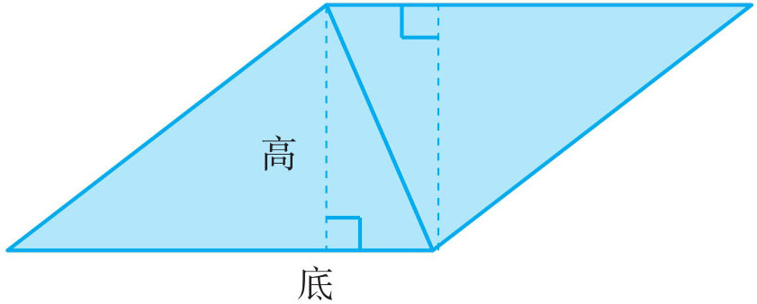
因为，平行四边形的面积＝底×高，所以，三角形的面积＝底×高÷2。
（2）割补法
①把一个三角形沿它的中位线剪开，把其中一部分移到三角形的右下角，使它转化成一个平行四边形，三角 形的底相当于平行四边形的底，三角形的高相当于平行四边形高的一半。
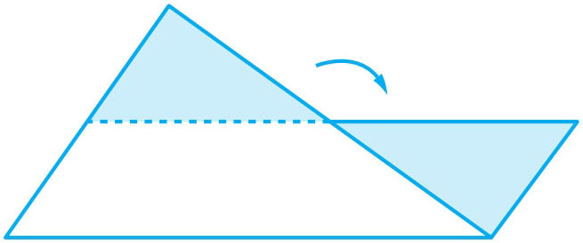
因为，平行四边形的面积＝底×高，而平行四边形的高等于三角形高的一半，所以，三角形的面积＝底×高÷2。
②把一个三角形的两边从中点沿与高平行的线把它剪开，把剪掉的部分拼到上面，转化成一个长方形，长方形的长边与原三角形的高相等，宽是原三角形底边的一半，从而推导出三角形的面积公式。
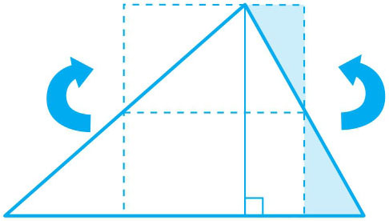
（3）折叠法进行推导，如下图：
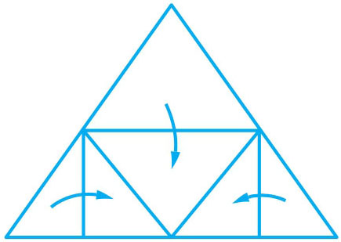
详见“图解思路”。
例2 已知一个三角形的面积是22平方厘米，底为11厘米，则它的高是多少厘米？
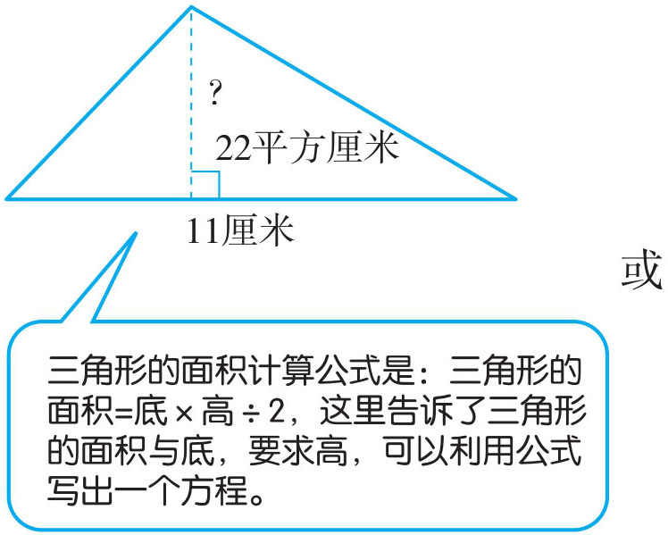
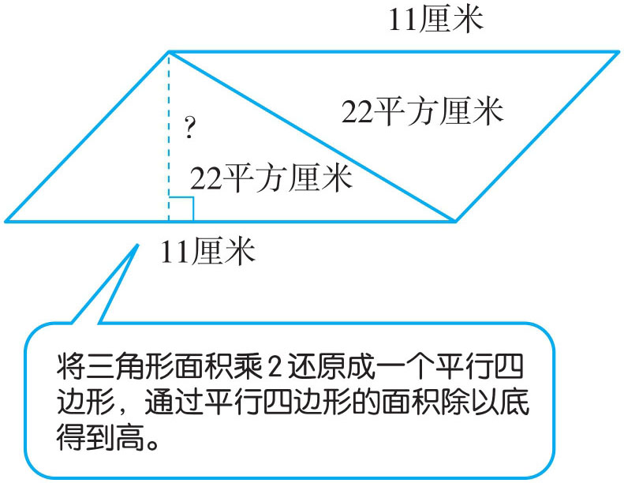
（1）解：设三角形的高为x 厘米，根据面积计算公式得：
11x ÷2=22
11x =44
x =4
（2）22×2÷11=44÷11=4（厘米）
答：三角形的高是4厘米。
例3 求下面直角三角形斜边（与直角相对的边）上的高（单位：厘米）。
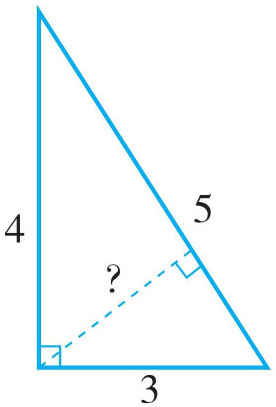
从图中发现斜边的长度为5厘米，要求斜边上的高，必须知道三角形的面积。而面积没有直接告诉，但我们通过两条直角边能够求出三角形的面积，从而求出斜边上的高。
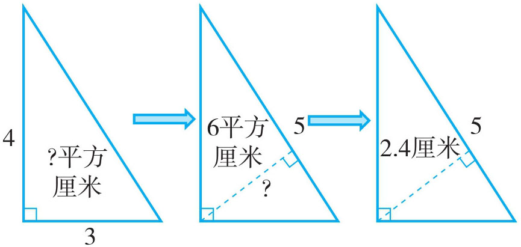
3×4÷2×2÷5=6×2÷5=2.4（厘米）
答：三角形斜边上的高为2.4厘米。
例4 下图中四个大的平行四边形一样大，那么它们里面的阴影部分的面积相比较，谁大？
通过三角形面积计算公式，我们可知甲、乙、丙图中的阴影部分都是平行四边形面积的一半，也即是甲、乙、丙图中的阴影部分面积相等。只有丁图中的阴影部分面积不能直接判断，我们可以通过假设与推理来得出结论（如下图）。
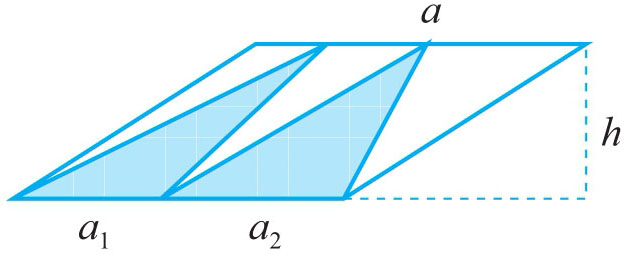
假设两个阴影部分的三角形的底分别为a 1 、a 2 ，高相等都为h ，得到两个三角形的面积和为：
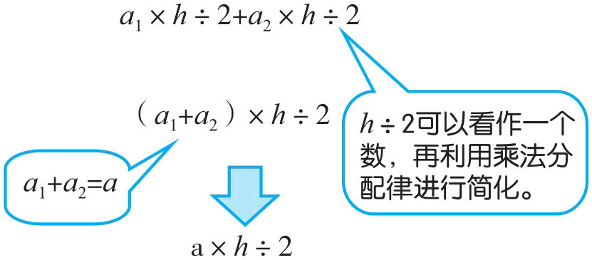
因a ×h 是平行四边形的面积，而两个阴影三角形的面积之和为a ×h ÷2。由此可知：两个阴影三角形的面积和也是大平行四边形面积的一半。
甲、乙、丙、丁四个图中的阴影部分面积都一样大。
例5 下图中两个正方形的边长分别是8厘米和4厘米，那么阴影部分的面积是多少平方厘米？
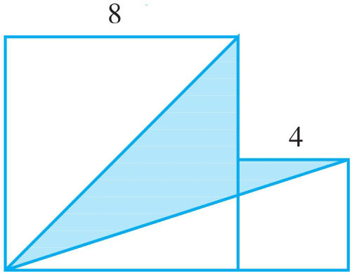
我们通过观察，发现阴影部分不是一个规则的图形，不能运用我们以前学过的图形公式直接求解。要求这种不规则的图形面积，通常有两种方法，一种是排除法，总面积减去其他部分的面积，留下所求部分的面积；二是分割法，将所求不规则的部分，通过辅助线分割成几个已学过的规则图形。
方法一（排除法）：用两个正方形的面积减去空白部分的面积。
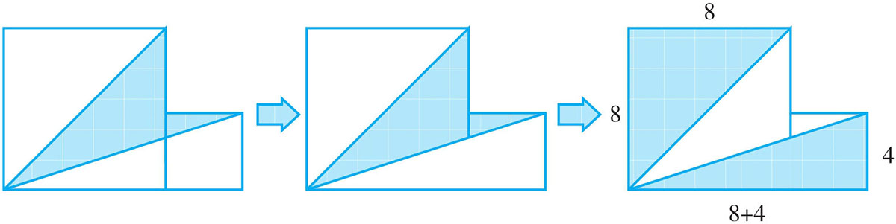
方法二（分割法）：将阴影部分用一条辅助线分割成两个三角形。
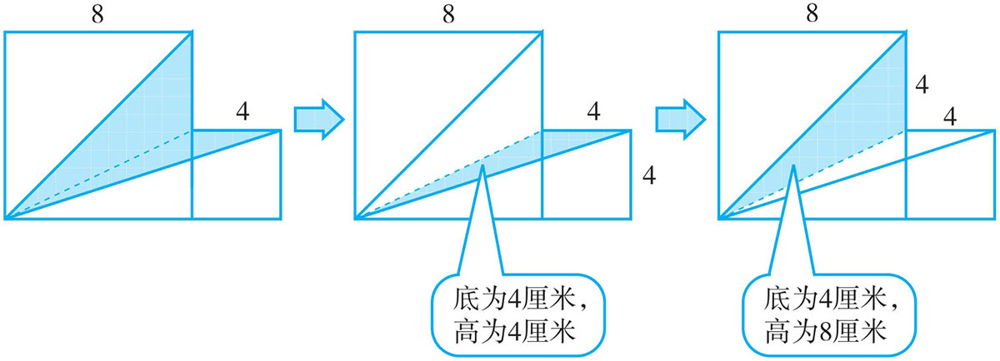
方法一（排除法）：
8×8+4×4=80（平方厘米）
(8+4)×4÷2+8×8÷2=56（平方厘米）
80-56=24（平方厘米）
答：阴影部分的面积是24平方厘米。
方法二（分割法）：
4×4÷2+8×4÷2=24（平方厘米）
答：阴影部分的面积是24平方厘米。
1．已知一个三角形的面积是80平方厘米，高为32厘米，高对应的底是多少厘米？
2．求下图中底边为20厘米所对应的高。
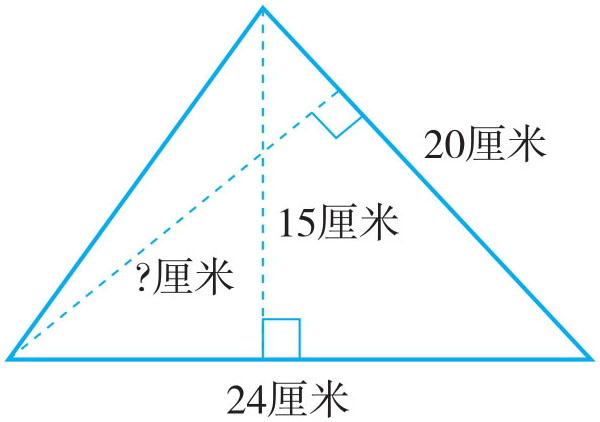
3．若下图中阴影三角形的面积是24平方厘米，则空白三角形的面积是多少平方厘米？
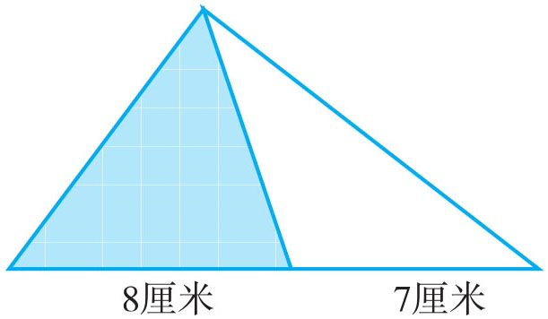
4．图中大正方形的边长为8厘米，小正方形的边长为4厘米，则阴影部分的面积是多少平方厘米？
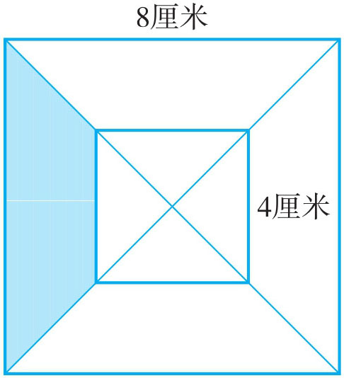
5．用两种方法计算阴影部分的面积。（单位：厘米）
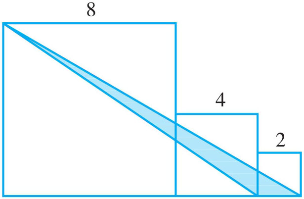
6．求阴影部分的面积。（单位：厘米）
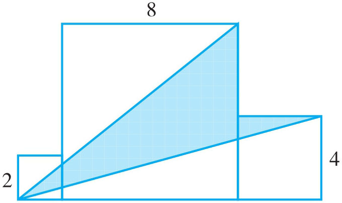
7．如图，已知E 点是AC 的中点，三角形ABC 的面积为60平方厘米，求平行四边形BCEF 中阴影部分的面积。
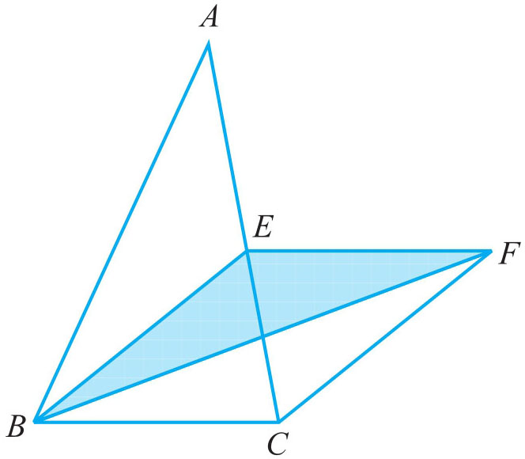
8．下面的图形是由4个相同的直角三角形拼成的。直角三角形的两条直角边分别是2厘米和4厘米。求大正方形的面积。
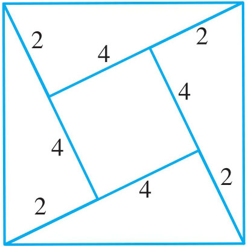
9．下图是由两个正方形拼成的图形，其中小正方形的边长为6厘米，求阴影部分的面积。
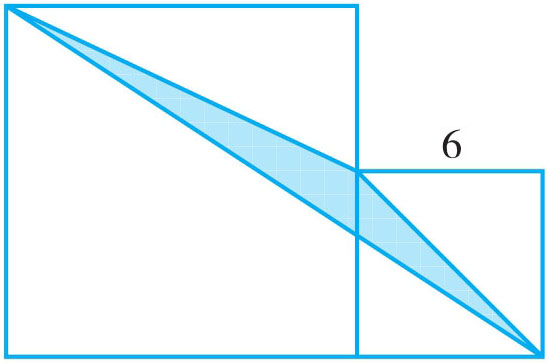